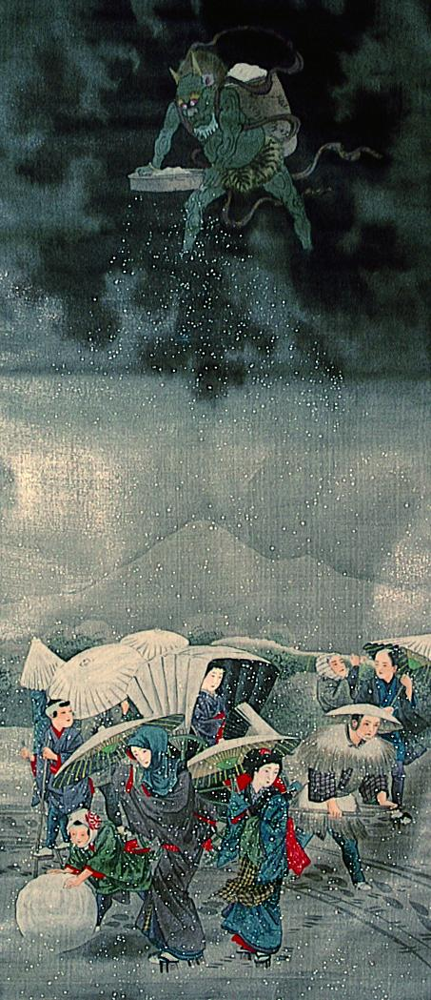

黒雲に浮かび、ふるいから雪を降らせる鬼。雪を溜めた籠を背負っている。
出典：親書誌：A5_pushkin_0063：（雪神図；セツジンズ）／日付：2011／資源識別子：A5_pushkin_0063_0001_0000
Copyright (c)2010- International Research Center for Japanese Studies, Kyoto, Japan. All rights reserved.